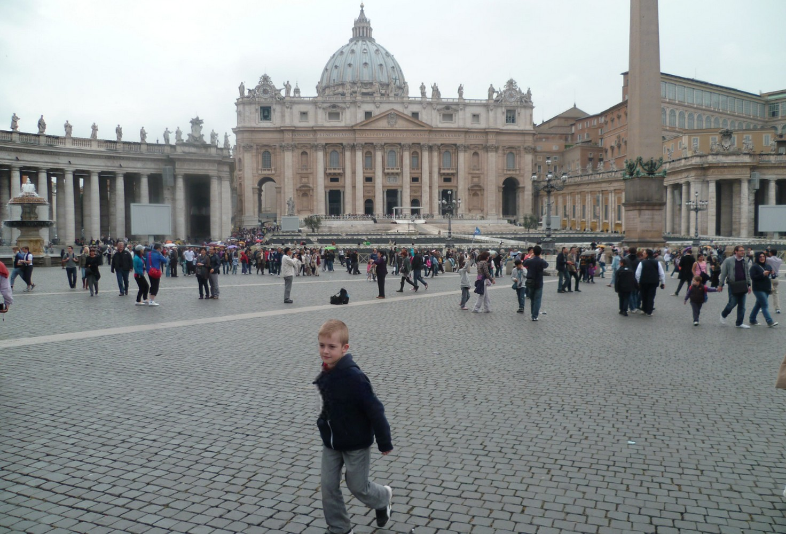
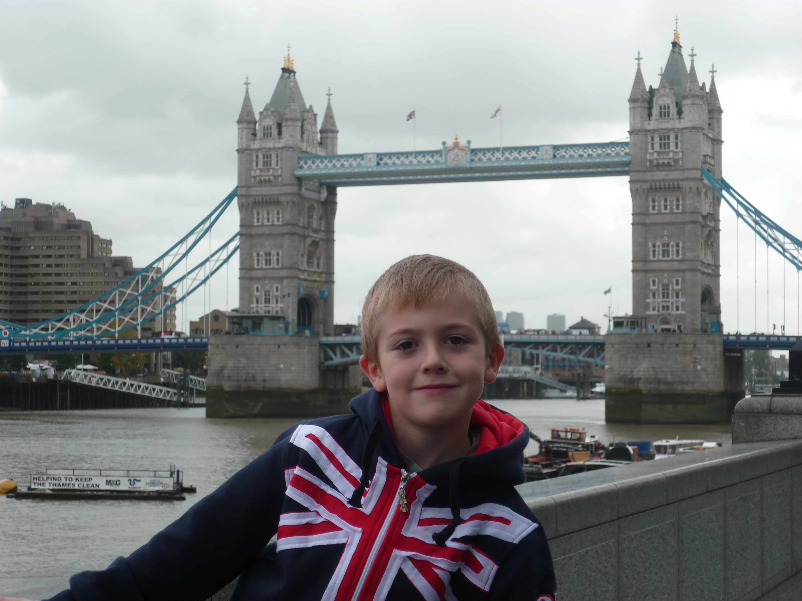
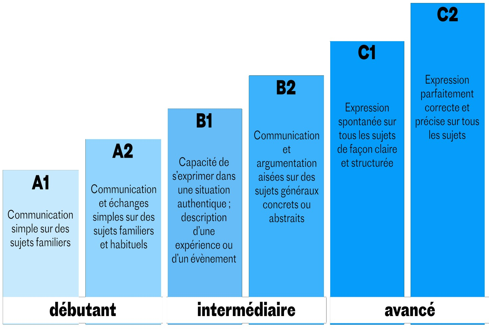
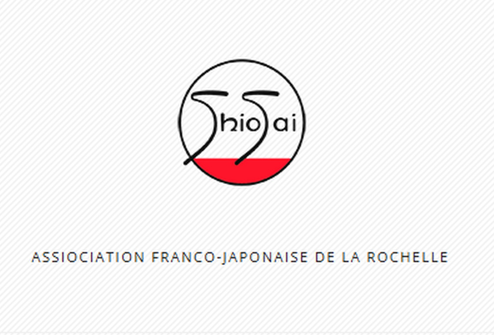
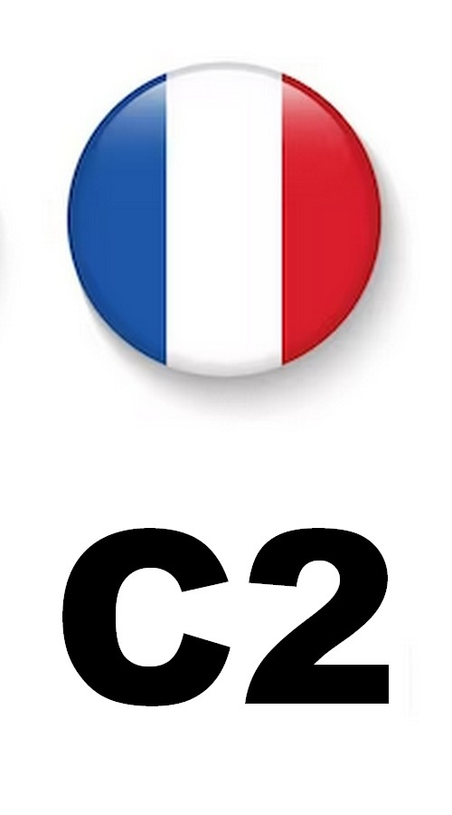
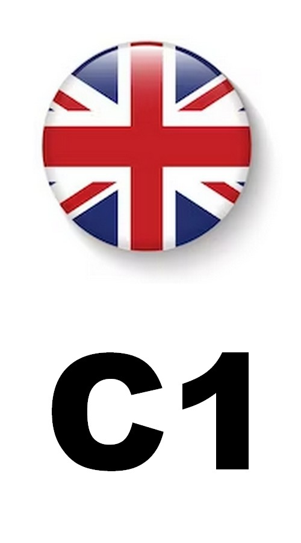
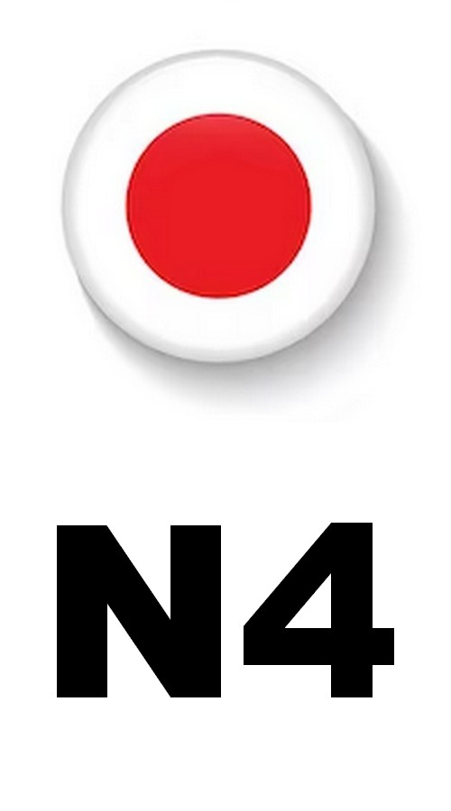
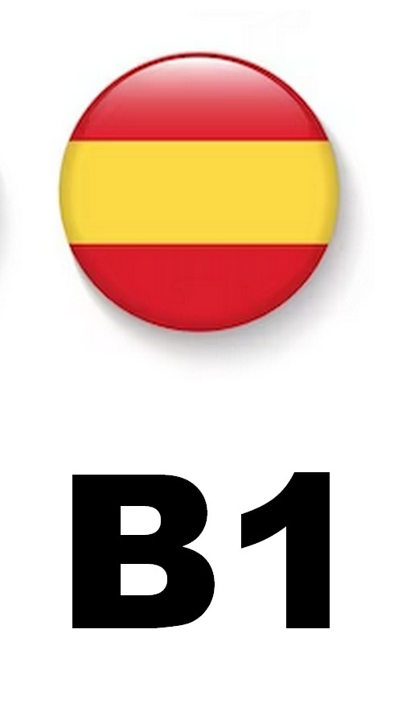

Né dans l’Europe de Schengen, j’ai eu la chance de voyager dans nos pays frontaliers et de découvrir leurs cultures : Angleterre, Espagne, Italie, Allemagne. Voyager dès mon plus jeune âge m’a révélé une frustration : celle de ne pas pouvoir communiquer avec les autres enfants. Très vite, j’ai développé un goût prononcé pour l’apprentissage de nouvelles langues.
Langues


Mes heures passées sur l’ordinateur et internet m’ont rapidement amené à côtoyer des personnes du monde entier et à utiliser l’anglais, que ce soit pour apprendre des concepts non traduits ou pour communiquer dans l’univers des jeux vidéo.
Ma passion pour les animés et l’univers Nintendo m’a également donné un intérêt particulier pour le Japon, ce qui m’a poussé à vouloir apprendre la langue japonaise.

Au collège, j’ai choisi l’anglais et l’espagnol comme langues étrangères. Mon implication et mon intérêt pour ces matières se sont traduits par de très bonnes notes, nourries par la qualité des enseignements reçus. Au lycée, j’ai poursuivi cet intérêt en optant pour l’enseignement de spécialité LLCE Anglais (Langues, Littératures et Cultures Étrangères).
Arrivé à l’université, les langues me manquaient : celles enseignées en cours ne suffisaient pas à répondre à mes attentes. J’ai ainsi installé mes premières applications de correspondance linguistique (HelloTalk, Tandem, etc.) où j’ai passé beaucoup de temps à échanger avec des personnes d’autres pays, dont certaines sont devenues des amis avec qui je suis encore en contact.

Porté par ce désir d’apprentissage, en 2023, j’ai rejoint l’association Shiosai afin d’améliorer mon niveau en japonais grâce aux cours qu’elle propose.



